Aparecidos por accidente, los selotrops son el reflejo de su creador, el Rey Dios. Se desplazan a la velocidad del rayo, desaparecen en un abrir y cerrar de ojos y vuelven a aparecer en otro sitio. Al igual que los selotrops, conocen los secretos del Wakfu.
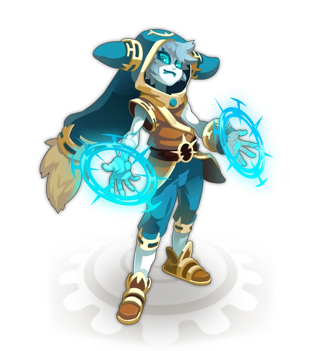Los xelors son magos que dominan el tiempo y todos los mecanismos que dan la hora: carrillones, relojes de pared y péndulos les obedecen a la perfección. Juegan con el tiempo para ralentizar a un enemigo o teletransportarse al lugar que les apetezca.
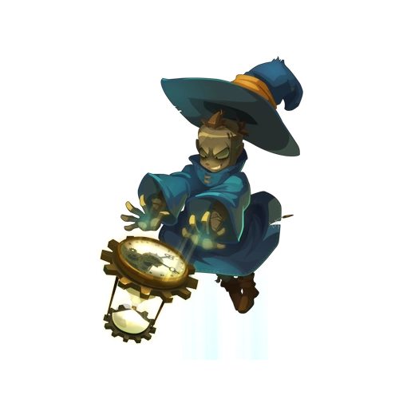Los pandawas son guerreros adeptos a las artes marciales que hacen locuras con su cuerpo y con el de los demás... No dudan en proteger a sus aliados subiéndolos a sus hombros, o en lanzar por los aires a sus enemigos para herirlos y luego celebrarlo ¡con una buena jarra de leche de bambú!
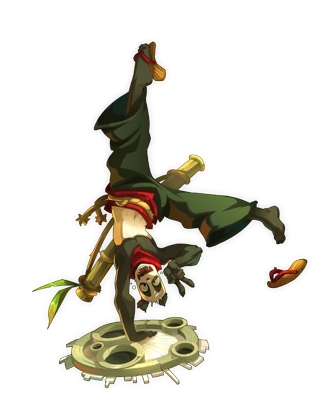Los srams son asesinos a los que les encantan las bolsas y más aún cuando están repletitas de kamas. La vida de un sram se podría resumir a las siguientes acciones: rasgar túnicas, palpar las joyas valiosas antes de poner una trampa o asestar un golpe mortal, y la no menos útil prestidigitación… ¡Ahora la ves, ahora no la ves… porque la joya yo te robé!
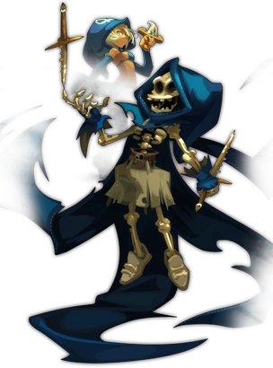¡Los yopukas son intrépidos y temerarios guerreros! Lo cierto es que saben hacer hablar a las armas como nadie. Y lo de que una buena pelea por la mañana temprano les recarga las pilas para todo el día, es una verdad como un puño. Su impetuoso temperamento hace que sean unos maravillosos paladines, capaces de lo mejor… y de lo peor.
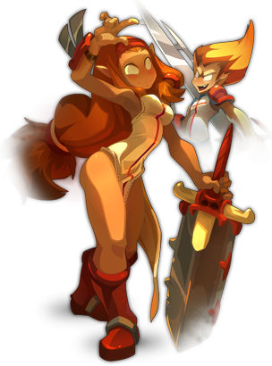Precisión, agilidad y destreza son las palabras clave para describir a los ocras. Estos arqueros son unos valiosos aliados contra los adeptos al cuerpo a cuerpo. Saben guardar las distancias para dominar el campo de batalla lanzando flechas aceradas al enemigo. ¡Vamos, que saben cómo hacer daño!
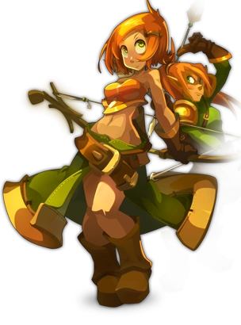Los zobals llevan máscaras mágicas con las que consiguen cambiar de cara tan fácilmente como se cambia de camisa. Según el momento, se pegan como el pegamento, se muestran airados como psicópatas o son partidarios de la retirada estratégica. En definitiva, se adaptan a cada situación, pero ¡cuidado con sus problemas de personalidad! Cuenta la leyenda que estos seres imprevisibles habrían sido bendecidos por el propio Sadida.
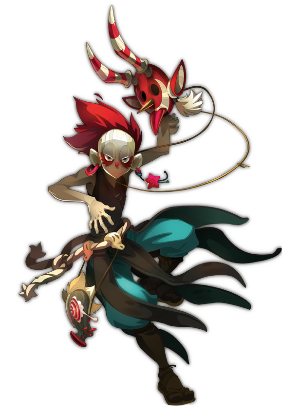¡Los sacrógritos son berserkers cuya fuerza aumenta cuando reciben golpes! Cualquier grupo debería tener en sus filas a, por lo menos, uno de estos guerreros ya que no temen las heridas y muy a menudo están en primera línea de batalla, dispuestos a derramar sangre. El sacrógrito es realmente el compañero ideal para pasar largas noches luchando.
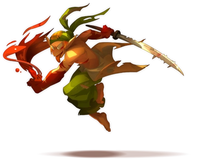Los fecas son leales protectores que siempre están en guardia. Los grupos de aventureros se los rifan por sus armaduras elementales, además de por su capacidad de encajar golpes duros. Son maestros del arte de los símbolos mágicos: unos defensores fuera de serie que sacan sus glifos cuando hay guerra.
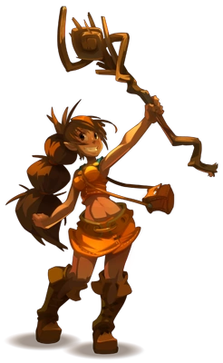Los aniripsas son curanderos que curan con una simple palabra. Las utilizan sobre todo para aliviar el sufrimiento de sus aliados pero, a veces, también para herir a sus enemigos. Entre ellos, los hay que se han convertido en cazadores de palabras, en expertos del verbo o en exploradores de los idiomas olvidados.
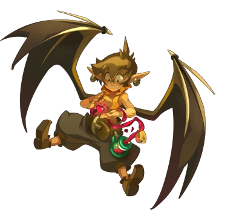Los zurcaráks son guerreros jugadores que se meten en aquellos lugares donde pueden ganar mucho o perderlo todo... Un buen zurcarák juega sin parar, por todo y por nada. Pero, ojo, se toma el juego tan en serio que puede, incluso, que se juegue el pellejo en un lanzamiento de dados para ganar el combate…
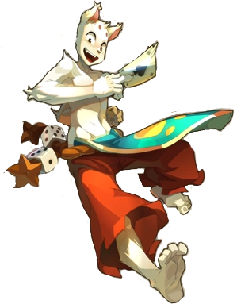Los anutrofs son impenitentes cazadores de tesoros sedientos de kamas que, a pesar de su edad avanzada, corren como dragopavos al ver un cofre bien repleto. Son expertos en el arte de ralentizar a sus enemigos: así pueden atosigarlos antes de dejarles fuera de juego ¡a palazo limpio!
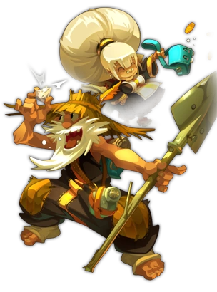Los steamers son marinventores con mil recursos para sacar más de una torreta de su caja de herramientas. Son excelentes estrategas y utilizan la tecnomagia para ganar terreno. Cruzan los siete mares protegidos con sus brillantes escafandras y rinden culto al gran Oktapodas, el protector de los océanos.
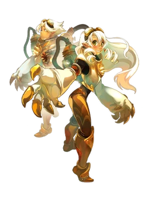Los sadidas son invocadores y envenenadores sin igual: vamos que saben cómo amargarles la vida a sus enemigos. Cualquier sadida digno de su condición es capaz de confeccionar muñecas de curación y de guerra y de invocar zarzas para atacar a sus enemigos.
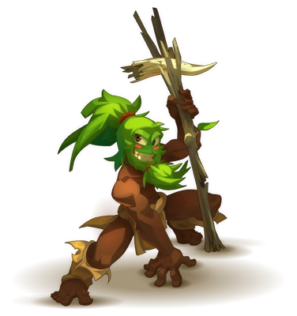¡Los osamodas son domadores natos! Tienen el poder de invocar criaturas y resultan ser excelentes adiestradores. Corre el rumor de que utilizan la piel de sus enemigos para vestirse. Si quieres saber si es cierto, puedes ir tú mismo a preguntarles... Si estás de su lado, el osamodas te mimará. En caso contrario, puede que termines transformado en algún que otro complemento de moda.
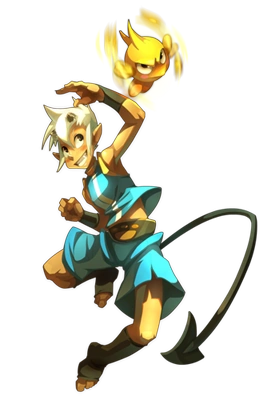